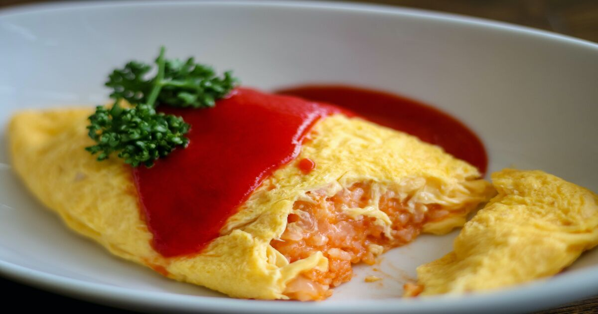

Omurice

Description
A Japanese style omelette with fried rice
Ingredients
- 1 chicken breast, diced into 0.5cm cubes
- 8 medium eggs
- 1 medium onion, diced finely
- 4 cups of cooked white rice
- 2 cups of ketchup
Steps
- Wash and rinse rice under running water.
- Cook rice in a rice cooker.
- Dice onions finely.
- Fry onions with a neutral flavoured oil until slightly browned.
- Take onions off pan. Fry diced chicken until cooked/slightly browned.
- Reduce heat. Add onions back in and add tomato sauce and let it cook for about a minute.
- Add rice to the mixture and set aside.
- Heat fry pan, add a little oil and place about two beaten eggs on the pan.
- Immediatley place about a cup of the rice mixture in the middle the egg whilst cooking - roughly in an American football shape.
- Fold up the wings of the egg over the rice football.
- When cooked, take a large plate and flip the egg and mixture onto the plate so that the rice is on the bottom and egg is on top.
- You can use a paper towel to shape the egg.
- Decorate the egg with ketchup.
- Eat with spoon!